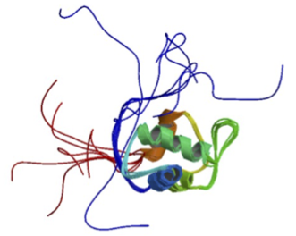
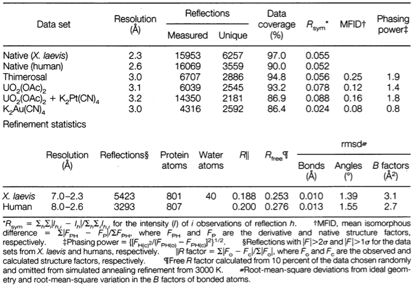
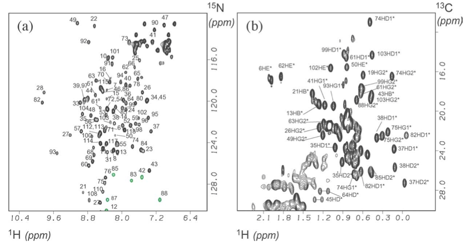

Computer Lab – Chimera 1
Goal: The purpose of this lab is to get familiar with protein structures determined by X-ray crystallography vs. nuclear magnetic resonance methods.
Introduction
In this exercise, we will use a protein called MDM2 as an example. MDM2 is an important protein in cancer—it has the ability to bind the transactivation domain of tumor suppressor protein p53, downregulating its ability to activate transcription. Many researchers have sought to develop anti-cancer drugs that target the binding site of MDM2, blocking p53 from binding, and thus upregulating the tumor suppressor activity of p53. Several of these drugs are currently in clinical trials.1
The first high-resolution atomic structure of MDM2 bound to p53 came from an X-ray crystal structure by Kussie et al. (1996).2 This structure shows a small helical region of p53 that binds a hydrophobic cleft in MDM2. To get these proteins to co-crystallize well, constructs with only residues 17-125 of MDM2, and residues 15-29 of p53, were used. Only the atomic structures of residues 25-109 could be resolved, however.

The X-ray crystal structure of MDM2-p53 (PDB ID: 1YCR)
In 2005, Uhrinova et al. used 2D NMR spectroscopy to determine the apo structure of MDM2 (“apo” = unbound by ligand).3 This structure contains more residues (1-119) but most of the terminal regions are unstructured.
The NMR structure of apo-MDM2 (PDB ID: 1Z1M)
Viewing and visualizing PDB files
To find a given PDB structure, open a browser and go to http://pdb.org. In the search window, type in the PDB ID, which will bring you to the entry page. This page has a great deal of useful information about the protein sequence and structure.
To view the contents of the deposited PDB file containing the atomic coordinates, click on the Display Files drop-down in the upper right and choose PDB File. The full contents (text) of the PDB file should be viewable in your browser.
To view the molecular structure in 3D, open the Chimera application and choose File > Fetch by ID … Type the PDB ID into the text field and click Fetch. The ribbon structure of the protein should appear, which you can rotate in 3D by clicking and dragging.
Chimera Tips:
To view side chain atoms: Actions > Atoms/Bonds > show
A number of “preset” renderings are be found under the Presets menu
To select atoms, Control-click
To select multiple atoms Shift-Control click
Option-click and mouse drag to translate the view
If your view gets off-center for any reason, try Action > Focus to recenter.
Procedure
Use (1) the information in the Protein Data Bank (visual inspection of the *.pdb file, and molecular visualization in Chimera), and (2) the original publications (posted on Blackboard) to answer the questions below.
X-ray crystal structure of MDM2-p53
PDB: The atomic coordinates for this structure are deposited in the Protein Data Bank
under PDB ID: 1YCR.
Publication: Kussie, P. H., Gorina, S., Marechal, V., Elenbaas, B., Moreau, J., Levine, A. J., & Pavletich, N. P. (1996). Structure of the MDM2 oncoprotein bound to the p53 tumor suppressor transactivation domain. Science, 274(5289), 948–953.
Last week we learned about X-ray crystallography, and how it can be used to determine the atomic structure of proteins. Recall that this involves: (1) collecting diffraction data (i.e. the intensities of a large number of diffraction spots and their identification with Miller indices and a unit cell), and (2) using a model of protein electron density to calculate (by Fourier Transform) computed structure factors Fc that can be compared to the observed structure factors |Fo|.4
The resolution of the computed electron density depends on the number of diffraction spots (i.e. the number of “reflections”). To give you some sense of the resolution of the final model, consider Figure 1 from Kussie et al (1996) below:

Figure. MIR electron density map of the X. laevis MDM2-p53 interface at 3.0 A resolution, contoured at 1.0 a, with the refined 2.3 A resolution atomic model in a stick representation. Stereo view focuses on the interactions of Phe19, Trp23, and Leu26 of p53 (labeled) with the (x2 helix of MDM2.
As you can see, the final model of the electron density really is “blobby”, but it is high-resolution enough that backbone and side-chain atoms (solid black lines, hard to see, I know) can be fit unambiguously. Some regions of this density may be too diffuse to fit (often the thermally mobile termini). For these regions, the protein structure is typically left undefined (hence, “missing residues” are common in X-ray crystal structures.)
Note that we are careful here to denote absolute values of Fo because of the so-called “phase problem” in which only intensities can be measured, not phase shifts.
Table 1. Statistics from the crystallographic analysis.
Questions
Consider Table 1 from Kussie et al. (1996), in which statistics are given for a number of similar crystal structures the authors obtained.
Why is the number of unique reflections smaller than the total number?
Explain the correlation between the number of unique reflections and the resolution of the crystal structure.
The R-factor is a measure of the quality of the (electron density) model, defined as R = Σ|Fo - Fc|/ Σ|Fo|, where Fo and Fc are the observed and calculated structure factors, respectively. Because of the iterative refinement of computed structure factors from the observed data, there is a danger of overfitting. A more useful measure is called the Rfree value, where 10% of the observed structure factors are left out of the data set, so they can be used for testing the predictions.
Which should have the larger value, R or Rfree?
Based on the reported values for (human) MDM2-p53, do you think overfitting is a problem for this structure?
3. Why doesn’t this structure have any hydrogens?
In Chimera, go to Tools > Higher-Order Structure > Unit Cell, and click Outline. Click on Make Copies to see the symmetrical copies of MDM2 inside the unit cell.
What are the unit cell dimensions a, b and c? (in Å, see also http://pdb.org)
What shape is the unit cell?
Visualize the side chains using wire-frame (Actions > Atoms/Bonds > Wire).
Based on what you can see, does it look like there are strong interactions between unit cell copies?
How careful do you think we need to be about such crystal packing artifacts when interpreting X-ray structures of proteins?
Recall that the crystallographic B-factor reports how diffuse the model of electronic density is for each atom. It is highly correlated to thermal motion. In Chimera, color the protein by B-factor, using Actions > Color > all options… > Tools > Render by Attribute (choose bfactor in the pull-down menu for Attribute:, then click Apply)
7. What parts of the protein have the most thermal motion?
NMR structure of apo-MDM2
PDB: The atomic coordinates for this structure are deposited in the Protein Data Bank
under PDB ID: 1Z1M.
Publication: Uhrinova, S., Uhrin, D., Powers, H., Watt, K., Zheleva, D., Fischer, P., et al. (2005). Structure of Free MDM2 N-terminal Domain Reveals Conformational Adjustments that Accompany p53-binding. Journal of Molecular Biology, 350 (3), 587– 598. doi:10.1016/j.jmb.2005.05.010
Solution structures of proteins are usually determined using 2D NMR spectroscopy. Two-dimensional techniques measure how the magnetization of one kind of nuclei (say, 1H) is affected by another kind of nuclei (say, 15N). The first step in 2D NMR is to assign the various magnetic resonances to particular protons. As long as the spectroscopic peaks are disperse (i.e. well-defined and far enough apart to be distinguished from one another), assignment is possible because resonance can only occur for nearby (through-bond) nuclei. For example, Figure 1 in
Uhrinova et al. (2005) shows HSQC (heteronuclear single quantum coherence) spectra disperse enough to assign (a) backbone NH protons and (b) side-chain protons.
Figure. Assigned HSQC spectra of MDM2N. (a) 1H,15N HSQC spectrum. Folded peaks are shown in grey. HN–NH assignments are indicated by residue number. (b) A portion of the 1H,13C HSQC spectrum showing methyl groups, with assignments indicated by residue and atom identifier (based on CNS notation).
Once the peaks are assigned, studies of NMR relaxation times can determine the presence of Nuclear Overhauser Effects, or NOEs. An NOE is a short-range transfer of nuclear spin polarization from one nuclei to another that occurs through space (rather than through-bond). Like its optical cousin FRET (Förster Resonance Energy Transfer), it is an induced-dipole-dipole interaction that falls off as ~1/r6. If an NOE is observed between two protons, it means that they must be close in three-dimensional space, with the strength of the NOE related to proximity, for example:
Strong NOEs: 1.7 Å to 2.5 Å
Medium strong NOEs: 2.5 Å to 3.5 Å
Medium weak NOEs: 3.5 Å to 4.5 Å
Weak NOEs: 4.5 Å to 5.5 Å
A set of measured NOE distances can put enough restraints on the set of possible protein structures, so as to completely determine the solution conformation. A computer is used to explore possible structures that best satisfy the NOE distance restraints, generating an ensemble of different conformations, each equally compatible with the experimental restraints.
Questions
In Chimera, load structure 1Z1M.
Why does this structure include protons, whereas the X-ray crystal structure does not?
Why are there so many structures in this PDB?
Obviously, there are very few NOE distance restraints for the N-terminal region. The modeled ensemble has many possible conformations for this region. How well do you think this represents reality? In other words: how much is the conformational heterogeneity an artifact of the computer models used for structural refinement, versus a real feature of the MDM2 N-terminal region? Can you think of any other experimental biophysical methods that you could use to answer this question?
Bonus: Load both the X-ray structure (1YCR) and the NMR structure (1Z1M) into Chimera and align them using Tools > Structure Comparison > MatchMaker (select 1YCR as the reference, and shift-click to select all NMR structures to match).
4. Can you see any changes in the binding cleft as described by Uhrinova et al.?
Cornell, W. D., Cieplak, P., Bayly, C. I., Gould, I. R., Merz, K. M., Ferguson, D. M., et al. (1995). A second generation force field for the simulation of proteins, nucleic acids, and organic molecules. Journal of the American Chemical Society, 117(19), 5179–5197. doi:10.1021/ja00124a002↩
Hoe, K. K., Verma, C. S., & Lane, D. P. (2014). Drugging the p53 pathway: understanding the route to clinical efficacy. Nature Reviews Drug Discovery, 13(3), 217–236. doi:10.1038/nrd4236↩
Kussie, P. H., Gorina, S., Marechal, V., Elenbaas, B., Moreau, J., Levine, A. J., & Pavletich, N. P. (1996). Structure of the MDM2 oncoprotein bound to the p53 tumor suppressor transactivation domain. Science, 274(5289), 948–953.↩
Uhrinova, S., Uhrin, D., Powers, H., Watt, K., Zheleva, D., Fischer, P., et al. (2005). Structure of Free MDM2 N-terminal Domain Reveals Conformational Adjustments that Accompany p53-binding. Journal of Molecular Biology, 350(3), 587–598. doi:10.1016/j.jmb.2005.05.010↩